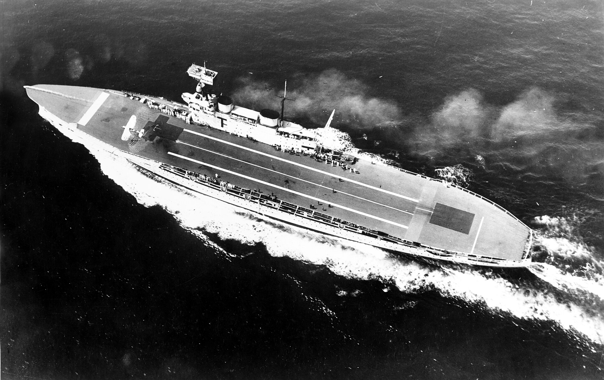
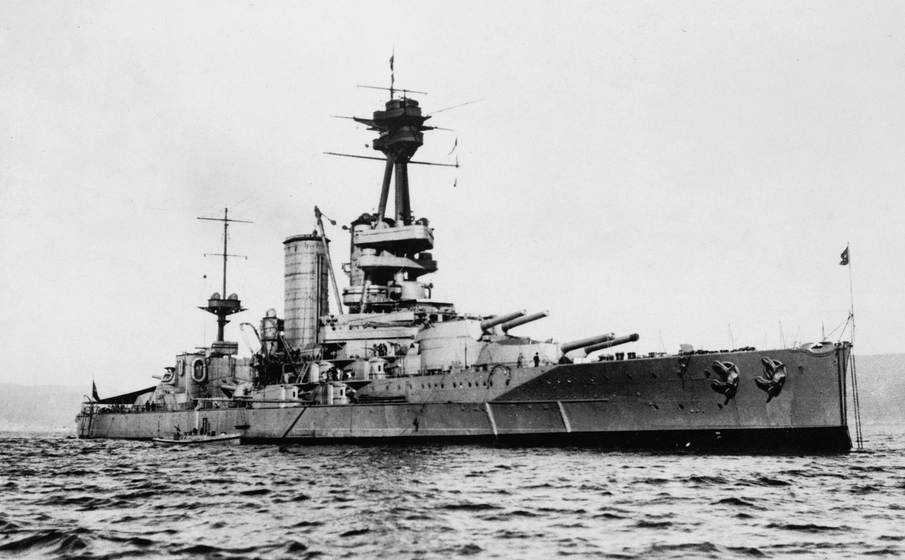
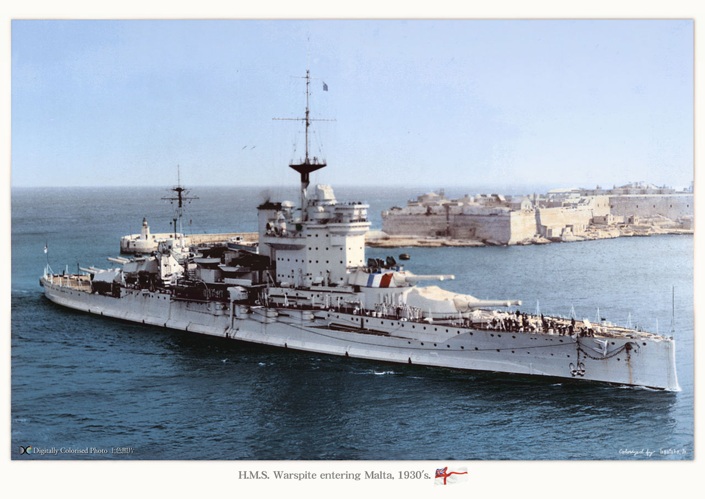
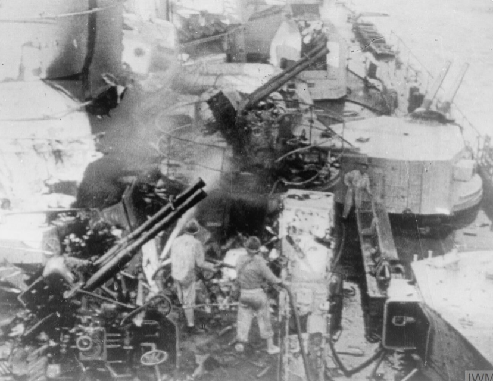
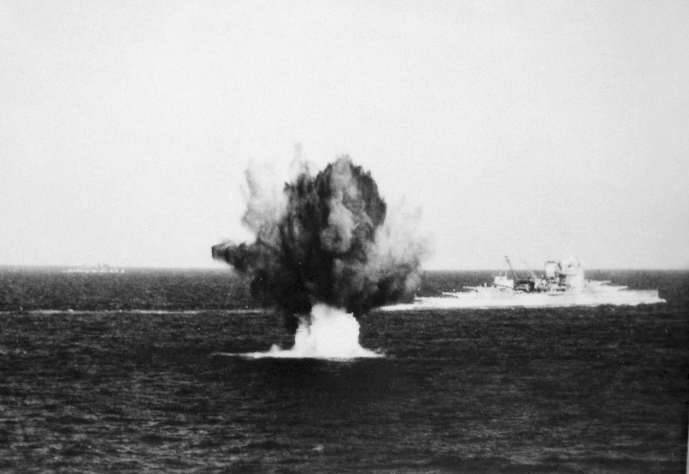
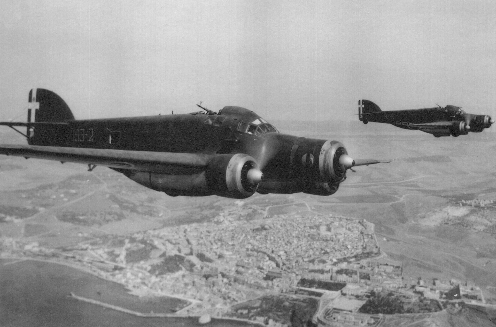
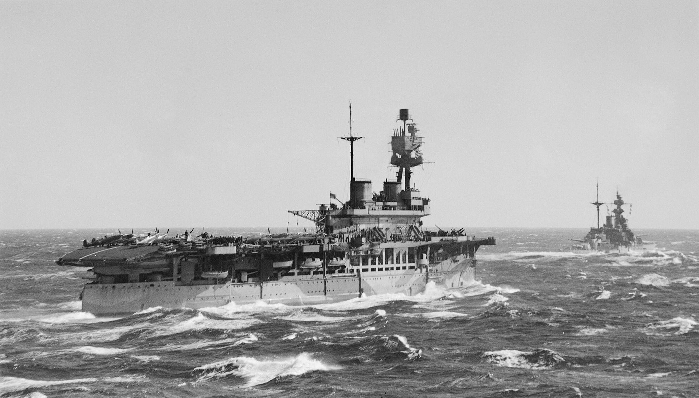
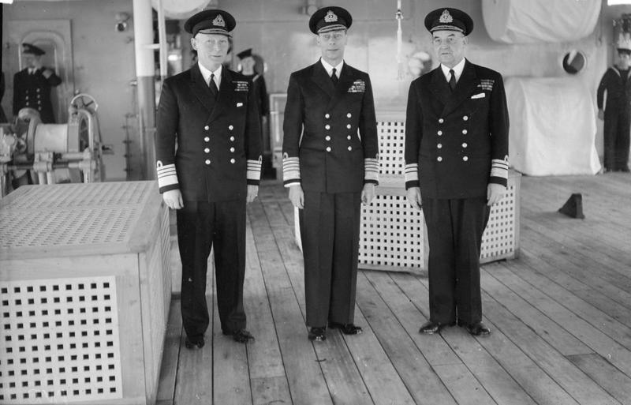

WW2 중 항모에서의 야간 작전 (7) - 이탈리아의 폭격기
게시: 2025-04-03T06:30:56+09:00
그러던 와중에 WW2가 터졌음. 영국 지중해 함대는 굉장히 난처한 처지에 빠짐. 누가 봐도 우선순위는 영국 본토 방어가 더 중요했으므로 항모 HMS Glorious를 비롯한 주력함들은 모두 본토 함대(Home Fleet)로 소환되고 남은 것은 낡고 작고 느린 항모 HMS Eagle (2만2천톤, 24노트)과 순양함 몇 척 뿐. 심지어 전함은 낡은 석탄 전함 하나도 없었음. 어쩔 수 없었던 것이, 지중해는 1차적으로 프랑스의 책임이었음. 그러나 1940년 5월 프랑스가 독일에게 항복하면서 이야기가 달라지게 됨.

(HMS Eagle은 원래 칠레 해군에서 주문한 수퍼 드레드노트급 전함 Almirante Cochrane이었는데, 아직 진수 이전이던 1918년 2월, 당시 WW1을 치르고 있던 영국해군이 새치기 구매하여 항모로 개조. 1918년 종전되는 바람에 개조는 늦어졌고, 결국 항모로 개조되어 취역한 것은 1924년. 이 사진은 1931년의 모습.)

(HMS Eagle이 그대로 수퍼 드레드노트급 전함 Almirante Cochrane이 되었다면 딱 이 모습이었을 것. 이 사진은 알미란테 코크레인의 자매함인 칠레 해군의 수퍼 드레드노트급 전함 Almirante Latorre. 알미란테 라토레는 1911년 칠레가 영국에 주문한 2척의 전함이었는데, WW1이 발발하자 거의 완성단계에 있던 이 전함을 영국해군이 거의 강제로 새치기 구매하여 1915년 HMS Canada라는 이름으로 취역시킴. 결국 WW1을 거친 뒤 1920년에 칠레 해군이 인수하여 알미란테 라토레가 됨. 칠레 해군에서는 1958년까지 현역으로 활동.) 부랴부랴 영국 지중해 함대에는 전함들이 증원 배치됨. 그 중 한 척이 진정한 불침전함 HMS Warspite (3만3천톤, 24노트)이었고, 워스파이트는 곧 이어 벌어진 1940년 7월 Calabria 해전에서 인류 역사상 최장거리인 24km 거리에서 이탈리아 전함 Giulio Cesare에게 명중탄을 기록. 나름 의미가 있긴 했으나 무승부로 끝난 이 해전에서 쌍방 모두에겐 lesson learned가 있었음.

(1930년대 말타섬의 발레타 항구에 입항하는 HMS Warspite. 워스파이트의 'B' 포탑에 빨강과 파랑의 줄이 그려져 있는 것은 프랑스 국기가 아니라 당시 스페인 내전 때문에 이베리아 반도로 군수품이 반입되는 것을 막기 위해 봉쇄하기 위해 동원된 국제연맹의 '봉쇄군' 인식 표시.)

(워스파이트의 15인치 포에 명중탄을 맞은 이탈리아 전함 쥴리오 체사레의 피해 상황) 일단 이탈리아 해군은 여기서 혼쭐이 난 뒤에, '독일놈들이 영국해군에 대해 현존함대 (fleet in being) 전략, 즉 강력한 함대를 유지하되 그걸로 승부를 보지 않고 항구에 묶어만 둠으로써 영국해군의 활동을 제약하는 전략을 썼던 것이 다 이유가 있었다'라는 것을 깨닫고 이후 좀처럼 영국해군과 결전을 벌이려 하지 않았음. 영국해군도 칼라브리아 해전에서 낡은 전함들로도 잘 싸우긴 했지만, 총 126기의 이탈리아 공군기들의 폭탄 400여 발이 함대에 떨어지는 경험을 해본 뒤, 해전의 주역은 이제 전함의 주포가 아니라 항공기의 폭탄에 의해 결정될 거라는 것을 깨닫게 됨. 급강하 폭격을 선호하던 독일 공군과는 달리 이탈리아 공군은 그냥 수평 폭격을 수행했는데도 그 모양이었음. 다행히 이 폭탄들에 의해 영국 함대는 경순양함 1척이 피격된 것 외에는 직접적인 타격을 입지 않았으나, 이 해전에서 영국 지중해 함대를 지휘하며 그 폭탄들을 뒤집어 썼던 커닝햄(Andrew Cunningham) 제독은 이렇게 기록. "전쟁 초기 이탈리아군의 고공 수평 폭격은 내가 여태까지 본 것 중에 최고의 실력이었다고 평가해도 과한 것이 아니었다. 독일군보다 훨씬 더 뛰어났다."
이렇게 이탈리아 폭격기들에게 혼쭐이 나고 나니 커닝햄은 이탈리아 해군 함정들의 무전을 받은 이탈리아 폭격기들이 육지의 기지에서 곧장 날아올 수 있는 해안 근처에서는 이탈리아 해군과 싸울 엄두가 나지 않았음.

(1941년 지중해 작전 중 항공 폭격을 받고 있는 워스파이트. 이탈리아 공군과 독일 공군에 의해 자주 폭격 대상이 되었고 크고 작은 피해도 많이 입었음. 특히 1943년 9월 독일 폭격기 Dornier Do 217에서 투하된 1.5톤짜리 전파 유도 폭탄 Fritz X에 의한 피해는 매우 커서, 후미 2번째 포탑은 노르망디 상륙 작전에서 지원 포격을 할 때도 고장난 것을 고치지 못한 채로 참전했었음.)

(지중해에서 영국 해군을 괴롭힌 주역, 이탈리아 공군의 SM.79 Sparviero 폭격기. 특이하게 코에도 엔진이 달린 3발 폭격기임.) 또 실망이라면 실망이었던 것이 항모 이글에서 발진한 소드피쉬 뇌격기들의 전과. 딱 18대의 소드피쉬와 3대의 복엽 전투기 Gladiator를 운용할 수 있었던 이글에서서 발진한 소드피쉬들은 활발히 기회를 노리다 이탈리아 중순양함들에 대고 어뢰를 투하했으나 모조리 빗나감. 유일한 전과는 전투가 사실상 끝난 다음 날 그 일대에서 얼쩡거리던 이탈리아 구축함 하나가 소드피쉬들의 어뢰 공격을 받아 딱 1발이 명중되면서 격침되었다는 것.

(지중해에서 작전 중인 HMS Eagle, 그리고 그 앞에는 워스파이트와 동급인 Queen Elizabeth급 전함 HMS Malaya.) 이후 커닝햄 제독은 이탈리아 해군을 육지에서 멀리 떨어진 바다로 꾀어내어 전투를 벌이려고 부단히 노력했으나 이탈리아 해군은 결전을 회피하고 WW1 때의 독일해군처럼 '현존함대' 전략을 구사. 그러면서 이탈리아군은 해군 대신 공군으로 영국의 지중해 해상 보급을 끊임 없이 공격. 영국 지중해 함대에게 주어진 임무는 쉽지 않았음. 영국이 지중해 함대를 배치했던 이유는 거기에 중대한 영국의 식민지 이집트가 있고, 또 이집트를 지키기 위해 필요한 주요 요새 및 항구인 지브랄타와 말타섬이 있기 때문. 그런데 추축국인 이탈리아는 이집트 바로 서쪽인 리비아를 쥐고 있었음. 영국으로서는 본토 방어도 쉽지 않은 마당에 이집트 전선의 보급에도 힘을 써야 하는 곤란한 상황에 빠짐. 하지만 본토 국방성의 관료들이 아무리 곤란한 상황에 빠졌다고 하더라도 그건 책상 위에서의 문제일 뿐이고, 당장 영국 지중해 함대로서는 재앙에 가까운 일이었음. 영국에서 오는 보급로는 먼저 지중해 서쪽 지브랄타를 거쳐 지중해 한 가운데의 말타를 찍은 뒤 지중해 동쪽 이집트 알렉산드리아로 이어졌음. 동서로 엄청나게 길게 늘어진 보급로인 셈. 그에 비해 이탈리아는 본토, 또는 더 가까운 시칠리아 섬에서 리비아 트리폴리로 이어지는 짧은 보급로를 가지고 있었음. 당연히 이탈리아가 훨씬 유리한 상황. 이렇게 답도 안 나오던 상황에서 괴로워하던 커닝햄 제독의 숨통을 틔워준 것은 1940년 8월 도착한 신형 항모 HMS Illustrious를 선두로 하는 증원함대. 특히 일러스트리어스에는 매우 중요한 인물이 타고 있었음. 몇 년 전 영국 지중해 함대가 타란토 항구에 대한 야간 공습을 기획할 때 HMS Glorious의 함장으로서 구체적인 실무를 맡았던 Lumley St George Lyster 대령이 이제 제독으로 승진하여 지중해 함대 해군항공대 지휘관으로서 도착했던 것.

(HMS Illustrious. 이 사진은 1954년의 모습. 일러스트리어스는 1940년 5월에 취역한 항모로서 당시 영국 해군의 최신예함이었음.)

(이건 1943년 Scapa Flow에서의 사열 때의 모습. 맨 오른쪽이 라이스터 제독. 가운데는 당시 영국왕 조지 6세. 라이스터 제독은 이미 많이 늙어보이는데 놀랍게도 저때 나이 고작 55세였음. 영국 음식이 정말 건강에 해로운 듯.) 당연히 라이스터 제독과 일러스트리어스의 함장 Boyd 대령은 알렉산드리아에 도착하는 즉시 커닝햄 제독에게 소환되어 '이번엔 진짜로' 타란토 항구에 대한 습격 작전을 마련하라는 지시를 받음. 그러나 이번 작전은 과거 라이스터가 짰던 작전과는 차원이 다른 것이었음. 과거에는 아직 전쟁이 선포되지 않은 상황에서 앵글로색슨들이 좋아하는 '선빵', 즉 pre-emptive strike를 날리는 것이었으므로 이탈리아군의 방어 태세가 훨씬 느슨하다는 것을 전제로 하고 있었음. 그러나 이젠 이미 전시 상황이므로, 타란토 항구는 철저하게 방어되고 있을 것. 예전에도 그랬지만, 그런 상황에서 느리디 느린 소드피쉬 뇌격기로 적 항구를 공습하기 위해서는 밤에 쳐들어가는 수 밖에 없었음. 그런데, 밤에 쳐들어갔다가 밤에 돌아오려면 야간에 항모에서 이착함하는 훈련을 해야 하는 것 아닌가? 어두운 밤에 항모에 착함하는 것도 어렵지만 애초에 어두운 밤에 아군 항모를 어떻게 찾지? 그런데, WW2 발발 전부터 전세계 해군 중에서 야간에 항모에서의 야간 작전 훈련을 정기적으로 수행했던 나라가 딱 한 나라가 있었음. 바로 영국. 왜 미해군이나 일본해군, 또 항모는 당장 없더라도 발트해와 북해에서 활발한 해양 초계기 작전을 벌이던 독일 등등은 야간 비행 및 야간 해상 공격 훈련을 안 하고 있었는데 왜 오직 영국해군만 그런 훈련을 하고 있었을까? 더군다나 1930년대라면 아직 공대함 레이더는 커녕 레이더라는 개념 자체가 없던 시절인데? 여기에는 지중해라는 특수성이 한몫 하고 있었음. (다음 주에 계속)